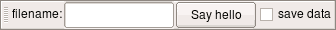

|
NanoQt documentation: home > new widgets |
In some cases, it may be desirable to have some interactive control on a script. This can be achieved by creating some widgets the script can interact with. Five types of widgets are available for this purpose:
It is also possible to create windows in two flavors:
All of the five basic widgets are created from script by using a constructor like:
do_save = new CheckBox("save data");As soon as it is created, the new widget appears on the script toolbar, which is a toolbar normally located at the top of the NanoQt window (although it can be moved). The toolbar is initially empty. Below is an example of how it may look after four widgets have been created. From left to right: a label ("filename:"), a line edit (empty white box), a button ("Say hello") and a check box ("save data"):

Once the widget is not needed anymore, it can be deleted:
delete do_save;Beware that the JavaScript language does not allow deletion of
variables declared with the var keyword. In this case, the
widget can be deleted simply by overwriting the variable with another
value. For example:
do_save = null;Buttons are meant to perform an action whenever they are pressed. Before creating a button, one has to define the action it should accomplish by writing a function to perform this action. This function should expect no parameters and should not return any value. The button can then be created and connected with this function:
// Function to be called when we click on the button.
function hello()
{
echo("Hello!");
}
// Create a button connected to this function.
hello_button = new Button("Say hello", hello);Alternatively, a button can be made toggleable by setting its
checkable property to true. A toggleable button can be used
much like a check box:
// Create a switch fot the lights.
lights = new Button("Lights");
lights.checkable = true;
// ... Sometime later, check its state.
if (lights.checked) echo("lights are on");
else echo("lights are off");Keep in mind, however, that check boxes are the most common user interface for setting binary options.
| Constructor | description |
|---|---|
| new Button(text, callback) | Create a new button. text is the string to be shown
on the button. callback is an optional function: it
will be called whenever the user presses the button. If provided,
callback should expect no parameters and return
nothing. A button with no callback is probably useless
unless turned into a toggle button. |
| Property | type | description |
|---|---|---|
| text | string | Text displayed on the button. Changing this property will change the displayed text. |
| checkable | boolean | If set to true, this becomes a toggle button.
Default is false, i.e. behave like a normal press
button. |
| checked | boolean | true if the button is pressed, false
if it is not. Changing this property will press/release the button
programmatically. This property is only useful for toggle
buttons. |
| enabled | boolean | Setting this to false will disable the button. A
disabled button is displayed grayed out. Setting this back to
true will enable it again. Default is
true. |
A check box is a widget representing a binary value: either it is checked or it is not. Once created, the state of the checkbox can be queried and modified by the script:
do_save = new CheckBox("save data"); // create a new chek box
do_save.checked = true; // initially checked
// Some lengthy acquisition...
// ...the user may unchek "save data" if data looks useless.
// Save the data if required
if (do_save.checked) {
save(data, filename);
echo("Data saved to " + filename);
}| Constructor | description |
|---|---|
| new CheckBox(text) | Create a new checkbox. text is a string that will
be displayed next to the checkbox (to its right). |
| Property | type | description |
|---|---|---|
| text | string | Text displayed next to the check box. Changing this property will change the displayed text. |
| checked | boolean | true if the check box is checked,
false if it is not. Changing this property will
check/uncheck the check box programmatically. |
| enabled | boolean | Setting this to false will disable the check box. A
disabled check box is displayed grayed out. Setting this back to
true will enable it again. Default is
true. |
A label is an output-only widget that displays some text. An initial text has to be provided to the constructor. The text can be modified later:
// Create a label with a default text.
label = new Label("loop not started");
// Write the loop index on the label.
for (i = 0; i < max; i++) {
label.text = "loop index = " + i;
do_something();
}| Constructor | description |
|---|---|
| new Label(text) | Create a new label that will display the string
text. |
| Property | type | description |
|---|---|---|
| text | string | Text displayed by the label. Changing this property will change the displayed text. |
| enabled | boolean | Setting this to false will gray out the label.
Setting this back to true will restore its normal
display. Since labels accept no user interaction, the effect of
changing this property is only visual. |
A line edit is meant to let the user input some text. The constructor takes no argument and creates an empty line edit. The text can later be queried and modified by the script.
It is advisable to document the purpose of the line edit by creating a label just before the line edit:
// Create a Label and a LineEdit next to each other
label = new Label("filename:");
filename_entry = new LineEdit();Since created widgets are packed left to right, the text "filename:"
will be shown on the left of the line edit. The contents of the line
edit can be queried as its text property:
// ... take some data... then:
filename = filename_entry.text;
save(data, filename);
echo("data saved to " + filename);| Constructor | description |
|---|---|
| new LineEdit() | Create a new, empty, line edit. |
| Property | type | description |
|---|---|---|
| text | string | Text entered in the line edit. Changing this property will change the contents of the line edit. |
| enabled | boolean | Setting this to false will disable the line edit. A
disabled line edit is displayed grayed out. Setting this back to
true will enable it again. Default is
true. |
While line edits allow the user to input arbitrary text, in some
cases it is desirable to restrict the input to a predefined set of
strings. A combo box can be used for this purpose. Pass the array of
allowed values to the constructor and use the text property
to read the currently selected value.
// Create a combo box.
color = new ComboBox(["red", "green", "blue"]);
// Tell us when it changes.
color.onchange = function() {
echo("color set to " + this.text);
};
// Change the value.
color.text = "blue";
// ...sometime later...
switch (color.text) {
// We are sure it will be either "", "red", "green" or "blue"
// ...
}As shown above, an optional event handler can be assigned to
the combo box by assigning a function to its onchange
property.
| Constructor | description |
|---|---|
| new ComboBox(array_of_strings) | Create a new combo box for selecting a string among the provided list. No item will be initially selected. |
| Property | type | description |
|---|---|---|
| text | string | Text selected in the combo box. Changing this property will change the selection. The empty string means "no selection". Setting this property to a string (other than the empty string) that is not an available option will raise an error. |
| index | number | Index of the selected item. First item has index zero. Changing this property will change the selection. -1 means "no selection". Setting this to an out-of-range index is equivalent to setting it to -1. |
| onchange | function | If defined, this function will be automatically called whenever
the selection is changed, either programmatically or by user
interaction. The function will be called with no parameters, as a
method of the combo box (i.e. this will be the combo
box itself). |
| enabled | boolean | Setting this to false will disable the combo box. A
disabled combo box is displayed grayed out. Setting this back to
true will enable it again. Default is
true. |
In case a script creates too many widgets, the script toolbar may not be convenient to hold all of them. It is then possible to create custom windows to hold the widgets we do not want to have in the toolbar. Assuming we have previously created a label, a line edit, a check box and a button (see previous examples), the following code would move them to a newly created window:
// Create a new window.
window = new Window("Script window");
// Move four widgets to this new window.
window.add(label, 0, 0);
window.add(filename_entry, 0, 1);
window.add(do_save, 1, 0);
window.add(hello_button, 1, 1);The window would then look like this (without the blue lines and numbers):
Widgets inside a window are laid out in a grid (blue lines above). The position of every widget is given by a row number and a column number (blue numbers above).
| Constructor | description |
|---|---|
| new Window(name) | Create a new empty window with the given name. The name should be a string. |
| Method | description |
|---|---|
| add(widget, row, column) | Adds the given widget (label, line edit, check box or button) to the window at the given coordinates in the grid layout. The widget is obviouly removed from its current location, be it the script toolbar or another window. |
While the previous constructors provide significant flexibility to build a user interface, there is a simpler alternative called ObjectWindows. With some limitations, an ObjectWindow can be used by script code just like a regular JavaScript object that stores data and functions. However, it also provides a window that makes the object visible.
To create an ObjectWindow, provide a window title and a template object to the constructor. The returned ObjectWindow will behave much like the provided template: it will have the same properties with, initially, the same values. Additionally, a window will be provided for interacting with the object. For example, the following code:
// A simple JavaScript object.
var template = {
filename: "data.json",
max_field: 2,
save_data: true,
say_hello: function() { echo("Hello!"); }
};
// Create an ObjectWindow based on the previous template.
var controls = new ObjectWindow("controls", template);will create the following window:
The returned ObjectWindow can also be used like a regular object:
// Greet the user.
controls.say_hello();
// ... after taking some data:
if (controls.save_data) save(data, controls.filename);| Constructor | description |
|---|---|
| new ObjectWindow(title, template) | Create an ObjectWindow with the provided window title, and modeled after the provided template object. |
The returned ObjectWindow will have exactly the same properties and methods as the provided template, but with extra behavior dependent on the type of the properties.
| Type | behavior |
|---|---|
| boolean | The property will be mapped to a check box in the window. Its value will always reflect the checked/unchecked status of the checkbox. Changing its value will programmatically toggle the checkbox. |
| string | The property will be mapped to a line edit. Reading the value will yield the current contents of the line edit. Changing the value will programmatically change the contents of the line edit. |
| number | The property will be mapped to a line edit. On reading, the contents of the line edit will be evaluated as a number. Typing-in a numeric expression line "2*PI" will work. If the contents does not make sense as a number, it will be evaluated as zero. On writing, the numeric value will be displayed on the line edit. |
| function | The property will be mapped to a button. Pressing the button
will call the function with no parameters, as a method of the
ObjectWindow (i.e. this inside the function will be the
ObjectWindow). The function should not be changed. |
Other types are not supported. Once the ObjectWindow is created, you should not attempt to add extra properties, delete existing properties, nor change the types of existing properties.